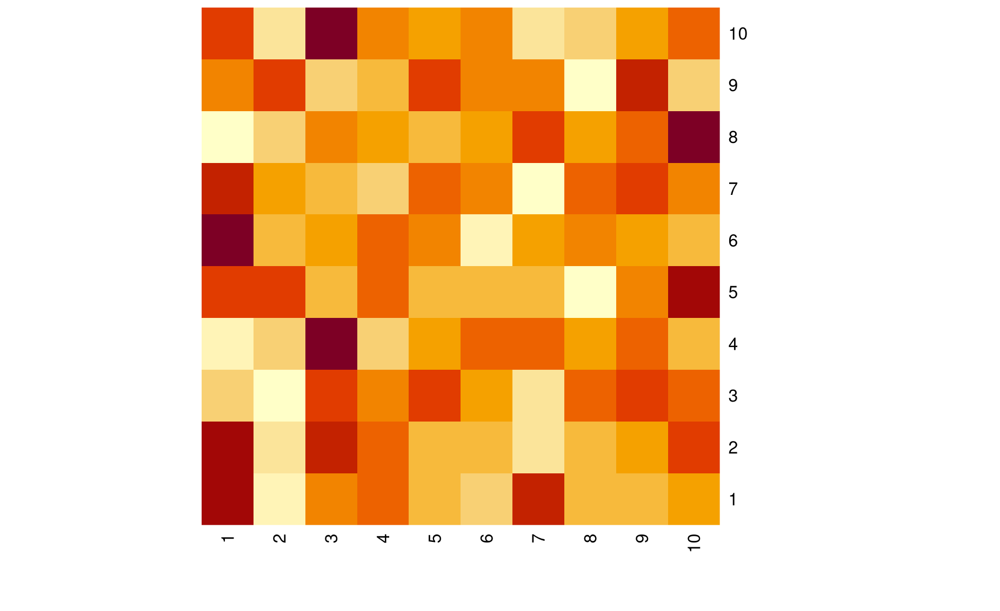
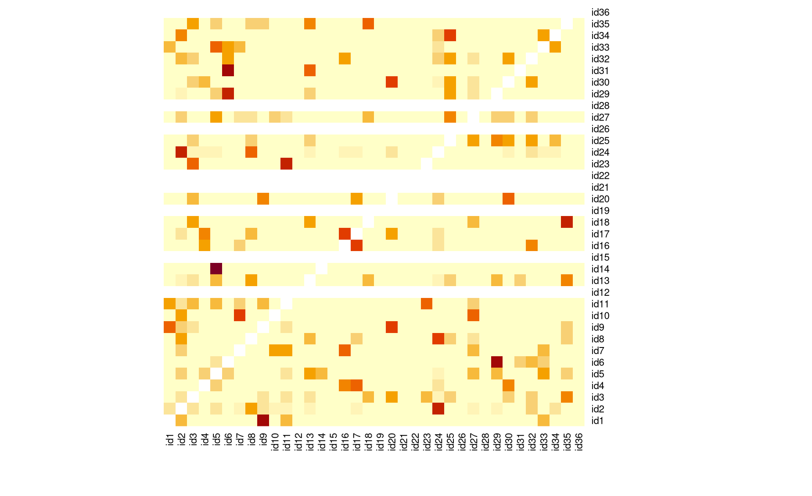

Module 44 Matrices & lists
Learning goals
- What
Rlists are, how to work with them, and when they are useful
- What
Rmatrices are, how to work with them, and when they are useful
As a data scientist, you will almost always be working exclusively with dataframes. But there are occasions when you will need other complex data structures – lists and matrices – to get a job done.
Here we show you what these data structures are like, how to work with them, and when to use them.
Lists
Think of lists as complicated vectors. Instead of being a set of single values, which is what a vector is, a list is a set of complex data structures. In fact, a better analogy may be that lists are like shopping carts. You can put a lot of different things in there.
To see what we mean, stage an empty list:
Now add a simple vector to it:
Now add a dataframe to it.
Now add a new list to it.
Now add a vector to that new list:
Okay! Nice shopping spree. Let’s see what we have:
x
$vector
[1] 1 2 3 4 5 6 7 8 9 10
$dataframe
name height.inches
1 Ben 75
2 Joe 73
3 Eric 80
$list
$list$vector
[1] 10 11 12 13 14 15 16 17 18 19 20This is a list: a lot of complicated data structures, all contained in a single variable.
As you saw above, you can access the items in your list using the same dollar sign, $, that we use to access columns in a dataframe:
You can do the same with lists within your list:
Alternatively, you can subset lists using double brackets, [[ ]].
Finally, you can create a list from scratch like so:
y <- list("vector1"=1:10,
"vector2"=11:20)
y
$vector1
[1] 1 2 3 4 5 6 7 8 9 10
$vector2
[1] 11 12 13 14 15 16 17 18 19 20Use cases for lists
Common use cases for lists include:
Keeping track of a bunch of related dataframes (i.e., by storing each dataframe as an element in a list).
Several
Rfunctions return lists as outputs. For example, when you split up a vector of strings usingstringr::str_split(), the output is a list that is the same length as your original vector.Returning complex outputs from your own custom functions. Since functions can return only a single object, you can stuff a bunch of different objects into a list and return the list.
Matrices
Matrices are like dataframes, except that they can only contain a single data type. Dataframes can have a column with text and another with numbers, but a matrix will only handle one type.
Here’s a simple dataframe containing two classes of data:
df <- data.frame(name=c("Ben","Joe","Eric"),
height.inches=c(75,73,80))
df
name height.inches
1 Ben 75
2 Joe 73
3 Eric 80When you coerce this dataframe into a matrix (using the function as.matrix()), the numeric data get coerced into text:
Other than that, you can treat a variable of class matrix similarly to a dataframe.
Subsetting is the same: matrix[rows,columns]
To build a matrix from scratch, use the matrix() function.
mx <- matrix(data=1:12,
nrow=4,
ncol=3)
mx
[,1] [,2] [,3]
[1,] 1 5 9
[2,] 2 6 10
[3,] 3 7 11
[4,] 4 8 12The data input takes a vector of data and sorts it into a matrix with rows and columns. It starts “laying down” your data in the first column, then wraps to the second column, etc.
You can also define names for the rows and columns in a matrix:
mx <- matrix(data=1:12,
nrow=4,
ncol=3,
dimnames=list(c("row1","row2","row3","row4"),
c("col1","col2","col3")))
mx
col1 col2 col3
row1 1 5 9
row2 2 6 10
row3 3 7 11
row4 4 8 12The dimnames input takes a list with two vectors: the first contains row names, the second contains column names.
Note, however, that you cannot subset a matrix according to their column names. mx$col1, for example, will not work.
One more tool worth knowing for matrices is the function diag(), which returns the values that fall along the matrix’s diagonal ([1,1], [2,2], [3,3], etc.).
The diag() function comes in handy in most use cases for matrices in R (see next section).
Use cases for matrices
Common use cases for matrices include:
Matrix algebra applications (duh), such as life history tables in biology.
Using certain packages whose inputs require matrix objects. Matrices are particularly common in analyses of social networks.
Producing images (after all, an image is just a matrix in which each value is a pixel color.)
To practice the latter use case, let’s build up a simple matrix using a random number generator:
mx <- matrix(data=round(rnorm(100,50,10)),
nrow=10,
ncol=10)
mx
[,1] [,2] [,3] [,4] [,5] [,6] [,7] [,8] [,9] [,10]
[1,] 64 32 50 52 41 37 60 42 40 46
[2,] 62 35 61 51 42 41 34 40 46 55
[3,] 43 37 53 50 55 48 42 52 54 51
[4,] 18 32 72 31 42 50 52 38 50 36
[5,] 58 59 47 55 47 48 49 37 54 63
[6,] 71 42 47 53 52 30 48 52 45 41
[7,] 60 49 47 44 55 53 36 54 57 51
[8,] 26 38 50 46 41 43 56 45 53 67
[9,] 55 63 43 46 63 56 54 32 65 45
[10,] 64 41 75 56 52 57 42 44 53 59
heatmap(mx,Rowv=NA,Colv=NA)
To see a real-world example of a matrix in action, here is a dataset containing rates of social associations, scaled between 0 and 0.5, among humpback whales in the fjords of British Columbia, Canada: humpback-sociality.rds.
Let’s look at the first 5 rows and columns of this dataset:
sociality[1:5,1:5]
id1 id2 id3 id4 id5
id1 0.50000000 0.02758621 0.00000000 0.00000000 0.00000000
id2 0.02758621 0.50000000 0.02424242 0.00000000 0.02439024
id3 0.00000000 0.02424242 0.50000000 0.00000000 0.00000000
id4 0.00000000 0.00000000 0.00000000 0.50000000 0.02631579
id5 0.00000000 0.02439024 0.00000000 0.02631579 0.50000000Notice that this matrix is symmetrical. That is, the number of rows equals the number of columns. It is an N x N matrix.
Also note that the row names and column names are the same. Each element in the matrix is the rate of association between the row’s whale ID and the column’s whale ID. This means that all of the values along this matrix’s diagonal will be 0.5, which is the max association rate in this example:
diag(sociality)[1:10]
id1 id2 id3 id4 id5 id6 id7 id8 id9 id10
0.5 0.5 0.5 0.5 0.5 0.5 0.5 0.5 0.5 0.5 The fact that this matrix is symmetrical with identical rows and columns also means that all the data in the bottom half of the matrix (i.e., below the diagonal) are the mirror image o the data in the top half.
Look again at the first few rows and columns:
sociality[1:3,1:3]
id1 id2 id3
id1 0.50000000 0.02758621 0.00000000
id2 0.02758621 0.50000000 0.02424242
id3 0.00000000 0.02424242 0.50000000If we don’t like the fact that the diagonal has large values (after all, it doesn’t make much sense to quantify how much an individual associates with itself), we can use the diag() function to replace those diagonal values with NA:
diag(sociality) <- NA
sociality[1:5,1:5]
id1 id2 id3 id4 id5
id1 NA 0.02758621 0.00000000 0.00000000 0.00000000
id2 0.02758621 NA 0.02424242 0.00000000 0.02439024
id3 0.00000000 0.02424242 NA 0.00000000 0.00000000
id4 0.00000000 0.00000000 0.00000000 NA 0.02631579
id5 0.00000000 0.02439024 0.00000000 0.02631579 NANow that we’ve cancelled out the diagnoal, a heatmap of this dataset will show us which whales are involved in the strongest social associations:

Review exercise
Task 1
Write a function that uses for loop techniques to convert any matrix, such as the sociality matrix above, into a dataframe. This dataframe must have a row for each value in the matrix, with three columns: row_name, col_name, and data.
The output of your function must be a list with two elements, raw_matrix and df (which contains your new dataframe).
Demonstrate that your function works using the sociality dataset above.
Task 2
Then, write a function that reverses your work: this new function will take the dataframe output of your first function and revert your dataframe back into a matrix. The output of this function will also be a list with two elements, raw_df and matrix (which contains your new dataframe).
In this function, include an input option giving you the choice of setting the diagonal in your matrix to NA.
Demonstrate that the matrix output of your second function is the same as the original sociality dataset, and demonstrate that the diagonal input works as well.